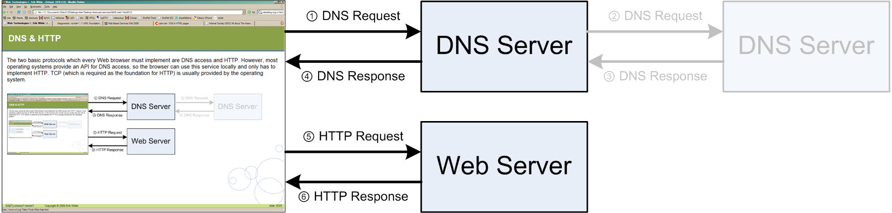

(2) Abstract
This lecture looks at Web browsers and how they work. It introduces the basic functionalities of a browser; retrieval and rendering of Web pages. Any modern browser needs to support more than just HTTP and HTML; it must support CSS for stylesheets, JavaScript for scripted Web pages, various image formats, and popular applications such as Flash. In addition, browsers can support additional functionality such as off-line operation, or in general more application-oriented features such as AIR or Silverlight.
Browser Basics
(4) What is a Web Browser?
- Network access (HTTP, HTTPS, FTP, file system, …)
- Rendering HTML layout (a subset of CSS layout)
- CSS specifies many more features
- Handling special HTML in the required way
- images (in various formats) must be downloaded and embedded
- forms must be rendered and form data must be submitted
- Running scripts and providing them access to the page
- re-rendering when scripts change the page (DHTML)
- providing scripts with network access (Ajax)
- Utility functions to make the browser more usable
- tabs and bookmarks for more organized browsing
- security policies for safer browsing
- additional content types may be supported (by external software)
- the browser may be extended (add-ons)
(5) One Minute in the Life of a Browser
- Analyze URI and connect to server to retrieve resource
- recursively repeat until all required resources are retrieved
- Analyze HTML, correct errors, and compute a DOM tree
- DOM is a memory representation of the HTML markup
- Apply CSS and compute the layout of the styled DOM tree
- compute CSS decorated DOM and apply formatting algorithm to it
- Start executing Client-side Scripting
[Client-side Scripting] code and change the DOM as required
- scripting may have initial phase and user interaction phase
- Continue executing scripting code in response to user interactions
- for many dynamic Web pages, this is a continuous activity
- If the user clicks on a link, start all over again
(6) Browser Usage
██ Internet Explorer (46.0%)
██ Mozilla Firefox (30.7%)
██ Safari (5.9%)
██ Chrome (14.2%)
██ Opera (2.0%)
██ Mobile (4.0%)
(7) Browsers and CSS
- Browsers have their own built-in CSS code
- HTML pages with no CSS are still formatted in some way
- HTML pages can provide their own CSS to change defaults
- users can change the browser's default to their own preferences
- CSS has a
[http://www.w3.org/TR/CSS21/cascade.html#cascading-order]
- browser defaults
- user declarations
- page declarations
- page
[http://www.w3.org/TR/CSS21/cascade.html#important-rules] declarations
- user
[http://www.w3.org/TR/CSS21/cascade.html#important-rules] declarations
- Rendering of HTML/CSS depend on a variety of factors
- default settings of the browser
- preferences set by the user
- CSS code provided by the page author
- HTML/CSS capabilities of the browser
(8) Browsers and the Internet
Before retrieving the Web page
[http://www.berkeley.edu/], the browser first has to find out the IP
[Internet Architecture; Internet Protocol (IP) (1)]address of the www.berkeley.edu server. Using this address, it can then open an HTTP
[Web Foundations (URIs & HTTP); Hypertext Transfer Protocol (HTTP) (1)] connection. The lookup service used by the browser is the Domain Name System (DNS)
[Internet Architecture; Domain Name System (DNS) (1)].

(9) Supported URI Schemes
- Most Web pages are available over HTTP
[Web Foundations (URIs & HTTP); Hypertext Transfer Protocol (HTTP) (1)]
- one popular exception are pages available over HTTPS
- Most browsers support more than just the HTTP and HTTP URI Schemes
[Web Foundations (URIs & HTTP); URI Schemes (1)]
-
http: and
https: are necessary (these are the Web protocols)
-
[http://en.wikipedia.org/wiki/File_URI_scheme] allows the browser to load local files
-
ftp: is useful because many documents are available on FTP servers
-
mailto: usually is not built into the browser (the mail tool is started)
-
tel: is a useful scheme for devices with telephone functionality
- Firefox 3 allows to
[https://developer.mozilla.org/en/Web-based_protocol_handlers]
(10) Caching
- Browsers retrieve resources for rendering Web pages
- In a typical user session, many resources are used repeatedly
- using the browser's
back
button - accessing pages reusing the same CSS or images
- Caching is a frequently used optimization in computer systems
- store retrieved data locally
- reuse that data when it is used again instead of fetching it again
- the hard (and important) part is cache invalidation
-
[http://en.wikipedia.org/wiki/Link_prefetching] allows browsers to load pages in advance
-
[http://en.wikipedia.org/wiki/Google_Web_Accelerator] was a Google-specific approach
- using prefetching and compression (connecting to a Google cache)
- serious privacy implications (all traffic is routed through Google)
(11) Security and Privacy
- Browsers store a lot of security-sensitive data
- data entered in forms is stored for future visits
- authentication credentials (cookies
[State Management (Cookies)]) are stored on behalf of servers
- the browsing history of visited pages is stored
- Connecting to HTTPS Web sites requires a certificate validity check
- browsers come with a large set of pre-installed certification authorities
- users implicitly trust this list of pre-installed authorities
- Browsers provide control over these features in complicated settings
- Browsers start providing more user-friendly
private modes
- Safari calls the feature private browsing
- IE8 has an
[http://www.microsoft.com/windows/internet-explorer/beta/features/browse-privately.aspx] mode
- Firefox 3.1 includes such a feature as Private Browsing
- Security/Privacy (as always) is a trade-off with convenience
(12) Browsers and Scripting
- Client-side Scripting
[Client-side Scripting] is essential for most modern Web pages
- well-designed Web pages also work when scripting is turned off
- many Web pages are not designed all that well
- when scripting is turned on, behavior should be predictable and consistent
- Scripting problems plagued Web developers for a long time
- major parts of Web development go into ensuring compatibility
- ill-behaving browsers (such as IE) make it impossible to develop simple code
- JavaScript Frameworks
[Client-side Scripting; JavaScript Frameworks (1)] provide
compatibility layers
on top of browsers
- Browsers can morph into
runtime environments
- using
[http://docs.google.com/] has little to do with Web browsing
- some essential features are missing (offline capabilities, local storage)
- Chrome
[Chrome (1)] is Google's attempt to morph the Web into an application platform